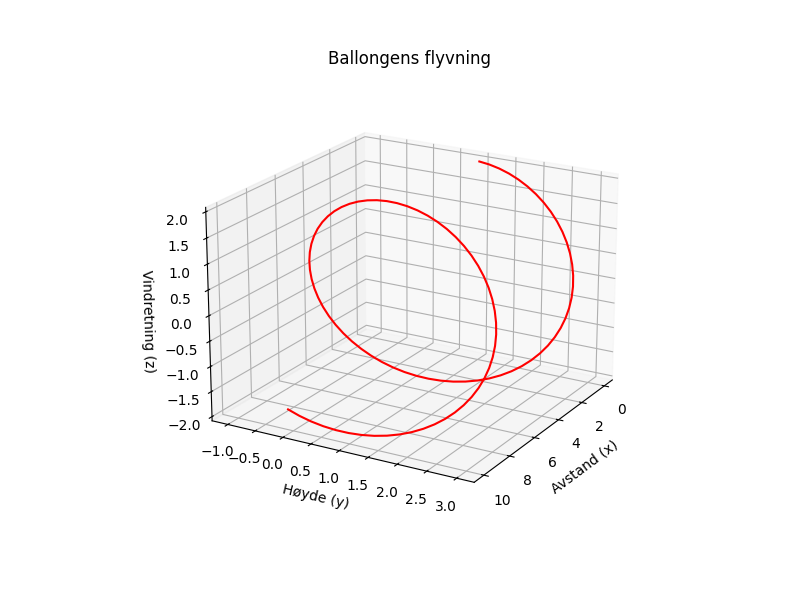

En rød ballong i vinden flyr, mot himmelens blåe eventyr. Den danser lett på sommerbris, og forsvinner sakte, på sin egen vis.

import matplotlib.pyplot as plt
import numpy as np
# Dikt
dikt = """
En rød ballong i vinden flyr,
mot himmelens blåe eventyr.
Den danser lett på sommerbris,
og forsvinner sakte, på sin egen vis.
"""
# Definer parametere
x = np.linspace(0, 10, 100)
y = np.sin(x) * 2 + 1 # Representerer ballongen som flyr oppover
z = np.cos(x) * 2 # Representerer vindens innflytelse (en sirkulær bevegelse)
# Lag en 3D-plot
fig = plt.figure(figsize=(8, 6))
ax = fig.add_subplot(projection='3d')
ax.plot(x, y, z, color='red')
# Legg til etiketter og tittel
ax.set_xlabel('Avstand (x)')
ax.set_ylabel('Høyde (y)')
ax.set_zlabel('Vindretning (z)')
ax.set_title('Ballongens flyvning')
# Juster synsfeltet
ax.view_init(elev=20, azim=30)
# Lagre figuren
plt.savefig(output_path)execution_ok=True fallback_used=False image_ok=True